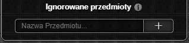
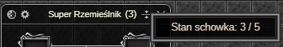
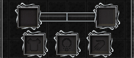
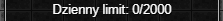
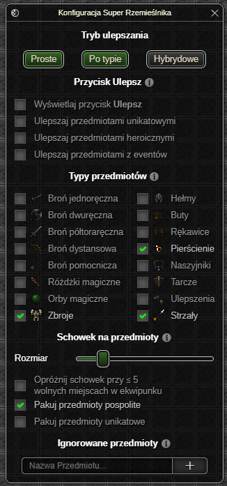

⚠️ UWAGA: Dopóki zestaw nie osiągnie stabilnej wersji (1.0.0) mogą pojawiać się błędy oraz zmiany podstawowych funkcjonalności (Zgłaszanie Błędów)
Super Rzemieślnik
Dodatek umożliwia wykorzystanie przedmiotów z łupu lub ekwipunku jako składników do ulepszania.
- Automatyczne ulepszanie przedmiotów umieszczonych w oknie dodatku przy użyciu wybranych typów łupów z potworów.
- Przycisk Ulepsz umożliwiający ulepszanie przedmiotami z ekwipunku bohatera o rzadkości wyższej niż pospolita.

Okno Ustawień
Tryb ulepszania

Proste– ulepszanie jednego przedmiotu umieszczonego w oknie dodatku.- Przedmiot zostanie ulepszony wszystkimi typami przedmiotów wybranymi przez gracza.
Po typie– ulepszanie do 3 przedmiotów osadzonych w oknie dodatku (licząc od lewej):- Pancerze – ulepszane wybranymi przez gracza pancerzami.
- Biżuteria – ulepszana wybraną przez gracza biżuterią.
- Broń – ulepszana wybraną przez gracza bronią.
Hybrydowe– połączenie dwóch poprzednich trybów.- Jeśli którekolwiek z pól z trybu
Po typiejest puste, pozostałe typy przedmiotów zostaną użyte do ulepszania przedmiotu z pola trybuProste.
- Jeśli którekolwiek z pól z trybu
Przycisk Ulepsz
Dokładne działanie przycisku opisane jest tutaj.

- Przełącznik wyświetlania przycisku wewnątrz okna aktywnych ustawień.
- Przełącznik ulepszania przedmiotami unikatowymi.
- Przełącznik ulepszania przedmiotami heroicznymi.
- Przełącznik ulepszania przedmiotami z eventów.
Typy przedmiotów

Typ Ulepszenia zużywa wyłącznie ulepszenia o rzadkości pospolitej, unikatowej oraz heroicznej.
Kołczany są zapisane jako strzały, tak samo jest w oknie rzemiosła z gry (?)
Schowek na przedmioty
Łup z potworów spełniający aktualne kryteria zostaje przechowany w schowku. Przedmioty z łupu zostaną wykorzystane do ulepszania po jego zapełnieniu.

- Suwak umożliwiający wybranie rozmiaru schowka
- Jeżeli opcja
Opróżnij schowek przy ≤ x miejscach w ekwipunkujest włączona, to rozmiar schowka jest aktualizowany dynamicznie na podstawie wolnych miejsc w ekwipunku bohatera.
- Jeżeli opcja
- Możliwość pakowania przedmiotów pospolitych do schowka.
- Możliwość pakowania przedmiotów unikatowych (z wyłączeniem przedmiotów z eventów) do schowka.
Ignorowane przedmioty

Jeśli nazwa przedmiotu zawiera którekolwiek z wyrażeń z tej listy, nie zostanie on umieszczony w schowku ani zużyty podczas ulepszania za pomocą przycisku Ulepsz.
Okno Aktywnych Ustawień
Stan schowka

Wewnątrz górnej belki okna wyświetlany jest aktualny stan zapełnienia schowka.Pola na przedmioty

Pod górną belką okna wyświetlane są pola na przedmioty przeznaczone do ulepszania. Wyświetlane pola różnią się w zależności od wybranego trybu ulepszania.
Dzienny limit

Dzienny limit oznacza ilość spalonych dzisiaj przedmiotów (max 2000). Przedmioty o typie Ulepszenia nie są wliczane w ten limit1.
Przycisk Ulepsz

Przycisk Ulepsz, umożliwia ulepszanie przedmiotami o rzadkości wyższej niż pospolita. W procesie ulepszania brane są pod uwagę jedynie przedmioty znajdujące się w ekwipunku bohatera, które należą do typów określonych w zakładce Typy przedmiotów.
Przykład działania dodatku

Jeżeli mamy włączone ulepszanie Hybrydowe, a użytkownik wybrał typy przedmiotów: Zbroje, Pierścienie i Strzały, to przy ulepszaniu przedmiotu w polu na Pancerze i przedmiotu w polu na ulepszanie Proste, działanie dodatku będzie wyglądało następująco:
Bohater zdobywa łup z potworów
- Schowek zapełnia się łupami, które spełniają powyższe kryteria.
- Następuje zatrzymanie bohatera - jest to wymagane do pomyślnego ulepszenia przedmiotów.
- Schowek zostaje opróżniony z łupów typu Zbroje, zostają one zużyte do ulepszenia przedmiotu w polu na
Pancerze. - Schowek zostaje opróżniony z łupów typu Pierścienie i Strzały, zostają one zużyte do ulepszenia przedmiotu w polu na ulepszanie
Proste. - Po pomyślnym ulepszeniu ruch bohatera zostaje odblokowany.
- Jeżeli którykolwiek z ulepszanych przedmiotów został maksymalnie ulepszony, jego slot zostaje odpowiednio zwolniony.

Ostatnia aktualizacja: 0.14.4
-
Teorytycznie nie są, ale gra zwraca informacje jakby były. Ostatecznie liczba może wynieść więcej niż 2000. ↩